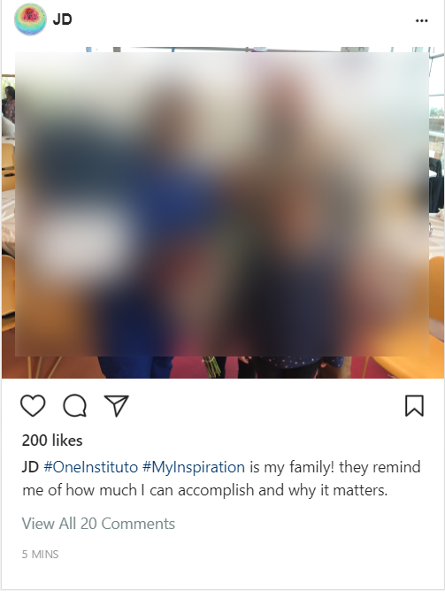
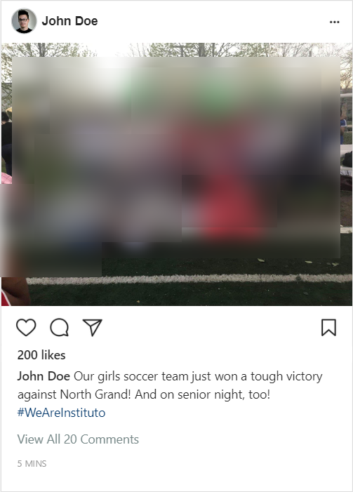
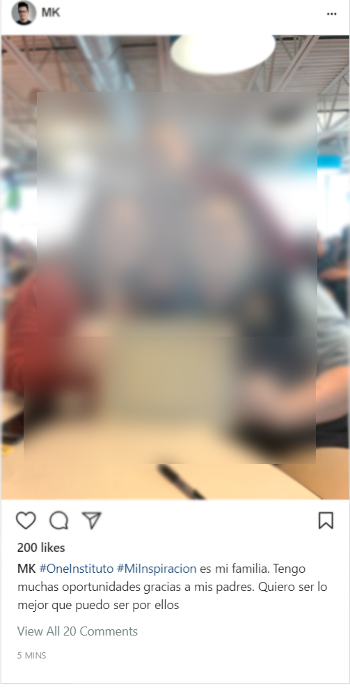
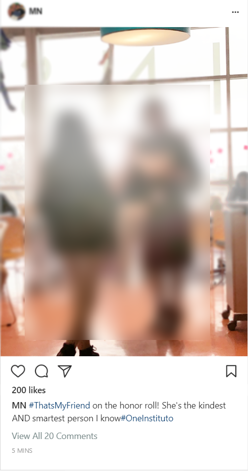

This project was completed as part of the Spring 2019 course, “Civic Media Collaborative Design Studio,” in the Comparative Media Studies department at the Massachusetts Institute of Technology. The studio is a project-based course in which students partner with community-based organizations to design real-world civic media creations. The Spring 2019 version of this course was focused on “hacking hackathons” and organizing radically inclusive design events.
Team
This project’s design team consisted of two key collaborators: Bonnie Taylor and Samuel R. Mendez. Bonnie works in development and communications at Instituto del Progreso Latino. She has experience in documentary filmmaking, as well as in communications and management in the nonprofit sector. Sam is a master’s student in Comparative Media Studies at MIT. He has experience in video/animation production, as well as community-engaged public health research.
Project Partner: Instituto del Progreso Latino
Instituto del Progreso Latino, at-a-glance
Instituto del Progreso Latino (Instituto) is a Chicago nonprofit organization working on education, professional training, and employment services for the city’s Latinx immigrant community. It began its work as a 501(c)(3) organization in 1977. Today, its educational programs include:
Career pathways training in:
Nursing
Manufacturing
Retail
Adult basic education in:
English as a second language
Spanish literacy and elementary education.
Youth Development
Escalera College Bridge program, offering tutoring, application assistance, volunteer/internship placement, and mentoring
Keep Educating Youth program, offering tutoring, physical activity, and meals for elementary students when school is out
Early learning programming for young children whose parents are attending classes at Instituto
In addition, Instituto operates three schools, serving a wide array of students:
Instituto Health Sciences Career Academy, providing high school students with an education that focuses on preparation for college and careers in health care
Instituto Justice and Leadership Academy, designed for students 17 to 21 years old who are returning to school
Instituto College, currently offering a School of Nursing, with plans to issue Associate Degrees in healthcare, production and operations, manufacturing management, and more
Beyond educational and professional development programming, Instituto also offers citizenship services.
Ecosystem Map
City Services in Pilsen
There are a number city institutions working in Pilsen to help residents achieve their goals in education, employment, youth development, and economic security. As Instituto works with a population that the city overall struggles to adequately serve, it is important to understand Instituto’s work within this public service context:
Other cultural, educational, and workforce development organizations in Pilsen
There are a number of institutions and organizations working formally in education and workforce development in Pilsen. It is important to understand Instituto’s work as part of a constellation of organizations working toward similar goals in the neighborhood:
There are several organizations that focus on the economic development of Pilsen. Given the ongoing tensions between plans to spur the economic development of the area’s industry and the need to advance the economic empowerment of current residents, it is important to view Instituto’s work in the context of such organizations:
Organizations offering educational and cultural services to a Spanish-speaking population across Chicago
There are other nonprofit organizations across Chicago working with Latinx communities and Spanish-speaking populations. A few in particular have a big impact on local culture and might reach the people that Instituto would like to inform about their classes and development programs. Though these groups may not operate in exactly the same service sector, it is important to view Instituto’s outreach work within this broader context:
Funders, for Instituto and similar organizations in Chicago
There are a number of foundation and governmental sources of funding that Instituto and other 501(c)(3) organizations in Chicago currently turn to for funding. Although the grant funding may be specifically for work with certain population groups or in certain kinds of services, it is important to understand Instituto’s work within the funding ecosystem for 501(c)(3) organizations working with Spanish-speaking populations in the Chicago area.
The prompt for this design project was to come up with a way of sharing program success stories with a wide audience. Success stories are currently gathered annually across Instituto’s wide array of programs as part of preparing annual reports. However, there is an opportunity to use more frequent sharing of such stories as part of outreach efforts to make community members aware of Instituto’s services. We were especially interested in ways of producing content that would be able to reach English- and Spanish-speaking populations. We approached this design prompt with an eye toward being able to create media content with Instituto clients at in-person events.
Design Justice Values
The Design Justice Network Principles informed this project’s co-design process. Three values in particular shaped thee process in the following ways:
Accountable, accessible, and collaborative process
We created a project timeline at the beginning of the project and came to an agreement of the roles we would each play. We made these agreements concrete through documentation in the form of a memorandum of understanding.
We kept meeting notes and prototypes in a shareable folder so other people at Instituto would be able to look in on the process if they wanted to.
Share design knowledge and tools
We shared with each other the design resources we had used in the past.
Sam shared resources from the Collaborative Design Studio class, as well as methods and exercises from past projects.
Bonnie shared her own educational resources on design processes, as well as analyses of illustrative examples of social media campaigns for us to draw from.
Prioritize design’s impact on the community
Throughout the process, we knew we would have ideas that we personally liked, but that might not make a lot of sense in the community Instituto works with. It was also important to try to get feedback that would let us know if some of our ideas might unintentionally exclude people or hit any dividing lines.
Background Research
The design process kicked off with background research to inform our approach to address this project’s design prompt.
Existing Resources
First, we took stock of current processes used to gather and share success stories as part of the annual reporting process. We walked through Bonnie’s current process of gathering storie. We also explored the affordances of Instituto’s website platform and content management system.
We saw an opportunity to enable the collection and sharing of stories with less depth and wider breadth through online methods, which would be more useful for reaching local community members than the longer stories used in the annual reports. Instituto’s current social media accounts also offered a useful starting point for thinking about how to engage local Chicago community members.
Analogous Examples
We also looked at the online activity of Illinois organizations that also served English- and Spanish-speaking populations: Mujeres Latinas en Acción, Puerto Rican Cultural Center, and the Joliet Spanish Community Center. We saw some useful examples for how to organize multilingual content, but we also saw that each organization handled its online presence quite differently. We recognized that there wouldn’t be a direct model to emulate or adapt, and a certain amount of experimentation and trial-and-error should be expected in this design process.
Local Expertise
We talked with an Instituto employee who specializes in partnerships and who has worked with Instituto’s university partners on community engagement projects. She urged us to think about local social media practices among Spanish-speaking populations, such as the importance of video and Youtube.
Prototyping Process
Cycle 1: Wide-Ranging Prototypes
Based off of the background research, we made and evaluated an initial set of lo-fi prototypes, ranging widely in form and audience:
Zine: Hybrid booklets/fliers advertising specific Instituto programs.
The in-person idea was cool, but Instituto would benefit more from a more visible online presence.
YouTube Series: Instituto OpenCourseWare.
This concept led to more questions than additional ideas.
Success Story Form: an internal form on the website to send to instructors periodically, or fill out with clients at Instituto events.
This idea was seen as a potentially useful tool that the organization’s IT team could carry on with.
Success Story Website Section: an easily accessible portion of the website for community members to see stories showing the range of programs and participants at Insituto.
We selected this idea as something worth building out regardless of the form that the main project idea would take. For example, stories from a social media campaign could be adapted to fit in the Instituto website.
Social Media Campaign: #learningAcrossGenerations, #institutoFamily, and #BiggestChangeIn4Words
We selected this as the main idea to pursue with this project. We liked the ideas that focused on community and mutual support.
Cycle 2: Social Media Campaign Prototypes
Based off of the results of the previous cycle, we focused this cycle on social media campaign prototypes. We started off with more background research on social media campaigns that seemed particularly relevant to the tone we wanted to achieve:
Interesting as an example of an in-person group activity, scaffolded through a social media campaign
Then, we developed 4 social media campaign prototypes that spoke to community support, friends celebrating each other, and intergenerational dynamics. We arranged a feedback session with people from various arms of Instituto, including instructors, a social worker, and a high school student. Their feedback focused on the need to be inclusive of all of the programs at Instituto if we were going to launch a single campaign. For example, though we wanted to highlight intergenerational touchpoints with Instituto, it is important to keep in mind that not all students will have that exact kind of support network. Their feedback also focused much more on a centralized social media campaign, rather than one approached as decentralized and openly participatory. Finally, feedback session participants were eager to help connect us with more high school students who could help provide feedback on the next round of ideas.
During this period, we also worked on fleshing out a new section of the website that would allow stories to be viewed by program, without cluttering up the main navigation. This required some trial and error in working with Instituto’s website platform and content management system. We received all-around positive feedback on this part of the project.
Final Prototypes, Beginning of Cycle 3
Website Section
Figure 2: Success Stories website section.
This website section is effectively ready to go, waiting for content to fill it with. We can include English and Spanish translations pretty easily on each page. We may run into more hiccups as we try to update each section, but it is good for our purposes now.
Social Media Campaign




Figure 3: Prototype Mock-ups resulting from cycle 2 of development, serving as the starting point for cycle 3.
None of these prototypes is exactly what we’re looking for, but we’re at the point now that we are ready to get feedback directly from community members that Insituto serves. The overwhelming feeling at the table was that this is a necessary next step that we are ready for.
Next Cycle
The next cycle of development for this project will start with feedback sessions with high school students on the final prototypes as seen in Figure 3. There are plans to present the project at the next board meeting in the summer. Overall, other people working at Instituto are very enthusiastic about the project and about the partnership developing with Instituto.
Although this process did not produce a set of tangible outputs that Insituto can immediately use, it did enable a lot of co-learning and a lot of relationship building. In the context of a population that has a strained relationship with teams coming from high profile universities, this is an incredibly important outcome that must precede the kind of work we’re still looking forward too, e.g. direct community outreach.
Reflection and Next Steps
Sam’s Reflections:
The feedback session with the staff highlighted some key factors to keep in mind as we move forward with this project: people responded well to the aspects of the images and captions that portrayed an image of mutual support. The feedback focused on the campaign as something centralized, though our mockups were focused on how people might participate in a social media campaign on their own. We will emphasize this aspect of the campaign and focus more on how we would fit specific event photographs into a story-sharing format through our social media campaign ideas. Overall, the people around the table saw the ideas as workable, and were excited to get the ideas in front of students in various programs, which will be our next step. I think this internal process and context-setting for the project was an important part of not just rushing through a design project without regard for the local culture at the partner institution. Context setting was very important within the context of the meeting, and I was glad the people at the table were able to get a better idea of where I am coming from and how Bonnie and I are approaching this project as something that will benefit everyone involved.
I’m excited to continue working on this project and strengthening my relationship with Instituto as I work on other media projects with them moving forward as well.
Bonnie’s Reflections
The feedback session with the staff was crucial to the success of this project. They provided valuable insights and criticisms that helped us restructure how we would present the project to future focus groups. Staff members were actively engaged and asked questions, in addition to requesting clarification as needed. Everyone at the table was invested in the success of this project and how it would raise awareness about Instituto in the future.
Overall, the project has progressed in line with my expectations. We are in the ideal place to test how it will be received among focus groups and tweak it in line with their feedback. Working with Sam has been a pleasure and I feel very confident that it will be well received as we fine tune it over the next couple of months.